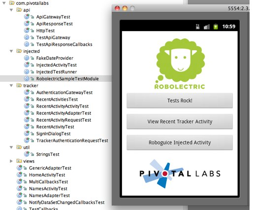

Getting Started
RobolectricSample is a Maven-enabled sample app that shows how to layout your project, includes example tests, and a build.xml file for compiling and
running tests.

Sample Tests
RobolectricSample’s tests are an excellent source for sample test code. Of note:
- HomeActivityTest.java: a simple Activity test exercising Buttons, presence of Images.
- LoadingTextViewTest.java: Testing custom views.
- HttpTest.java: Testing HTTP requests and responses.
- ApiGatewayTest.java: More HTTP traffic tests; incorporates pausing and resuming the background scheduler.
- InjectedActivityTest.java: Example of using RoboGuice dependency injection.
Android IntelliJ Starter
Another resource, especially for IntelliJ users, is the Android IntelliJ Starter. This “template” project configures Robolectric as a git submodule.
Test Annotations
@RunWith
To run your test with Robolectric, you need to tell JUnit using the @RunWith annotation on your test class:
@RunWith(RobolectricTestRunner.class) // <== REQUIRED for Robolectric! public class HomeActivityTest { @Test public void shouldHaveAButtonThatSaysPressMe() throws Exception { // test code here } }
@Config
You can instruct Robolectric to configure Android differently for any test class or method.
@RunWith(RobolectricTestRunner.class) @Config(manifest = "AlternateManifest.xml") // <== use a non-standard manifest file public class HomeActivityTest { @Config(qualifiers = "fr-land-hdpi") // <== use French resources on a sideways high-res display @Test public void shouldHaveAButtonThatSaysPressMe() throws Exception { // test code here } }
See the javadocs for org.robolectric.annotation.Config for details.
Robolectric.shadowOf()
Sometimes Android classes don’t provide methods to access the state of the Android objects under test. The
Robolectric.shadowOf() methods provide reference to the shadow instances representing Android objects,
allowing tests to assert on state otherwise not available.
Suppose the application assigns a drawable resource id on an ImageView in layout xml, like this:
<ImageView android:id="@+id/pivotal_logo" android:layout_width="fill_parent" android:layout_height="wrap_content" android:src="@drawable/pivotallabs_logo" android:layout_marginBottom="10dip">
Android provides no way to access the drawable resource id that was applied to the ImageView.
Robolectric’s ShadowImageView object records the drawable resource id so you can assert on it in test,
like this:
@Test public void shouldHaveALogo() throws Exception { ImageView pivotalLogo = (ImageView) activity.findViewById(R.id.pivotal_logo); ShadowImageView shadowPivotalLogo = Robolectric.shadowOf(pivotalLogo); assertThat(shadowPivotalLogo.resourceId, equalTo(R.drawable.pivotallabs_logo)); }